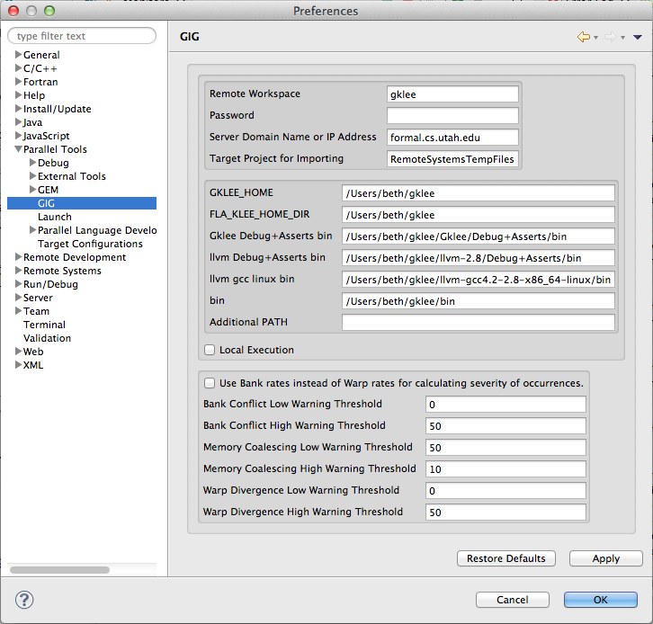

|
GIG - Preferences
|
GIG Preferences and Explanations

Remote and Local Execution
Remote Execution
| Username: |
This field indicates the username to send when connecting to a server. On the default server, this specifies the workspace. Currently, a new workspace can be created by connecting to the server with a new username and password.
The default username is gklee, and refers to a workspace that cannot have files sent to it, nor files in it deleted. It instead contains many examples of code for verification.
|
| Password: |
This field indicates the password. You need to have the correct password to access a given username, unless the password for that username is blank. A blank password indicates no password.
|
| Server Domain Name or IP Address: |
This field indicates which server to connect to. Different servers may handle client requests differently.
|
| Target Project for Importing: |
This field indicates which project is the default location into which to import files and folders from the server. If GIG can't figure out where else to put it, this is also where a log file will go after verification.
|
Local Execution
| Each of these: |
These fields indicate various parts of PATH variables that gklee may need. When you installed gklee locally, these likely were added to your .bashrc file for gklee to properly work.
|
Remote or Local Execution
| Local Execution |
This field indicates whether to use the server for verification, or to use the local install of gklee. By default, this is unchecked. This allows verification without requiring gklee to be installed locally.
|
Rate Warnings
| Use ... |
This field indicates which metric to use for measuring the extent of a problem for warning image purposes. This is purely a visual effect and has no real effect on execution.
|
| The Thresholds |
These fields indicate which percentages are the border lines between various levels of error as shown in the image. These are purely visual effects and have no real effect on execution.
|
Back to Top | Back to Table of Contents
School of Computing * 50 S. Central Campus Dr. Rm. 3190 * Salt Lake City, UT
84112 * isp-dev@cs.utah.edu
License